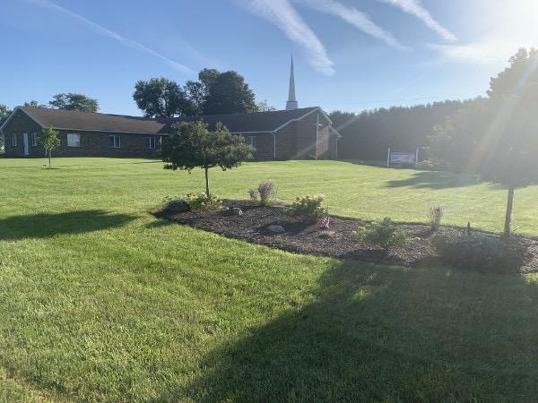
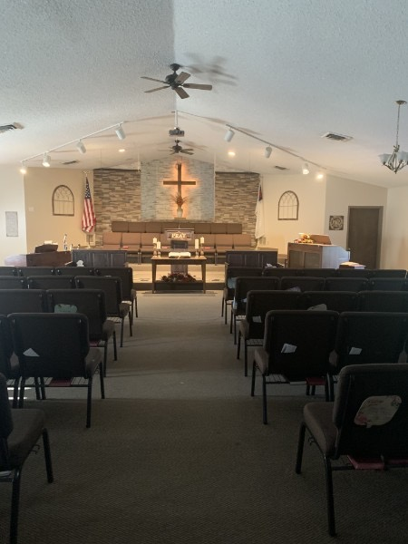
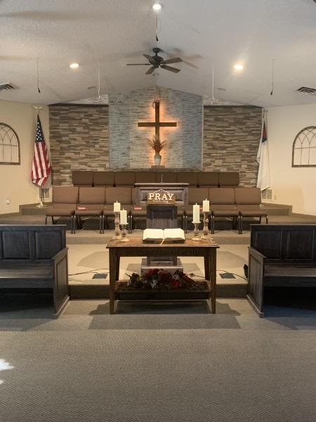

A church family
for Fostoria.
The Bible is open. The gospel is clear. And there is a place here for you and your whole family.

11275 W. Twp. Rd. 116 · Fostoria, Ohio
Make Sunday
the best day.
What to expect on your first visit
Sunday SchoolAdults and teens
01Main ServiceChildren's Sunday School and nursery
02Evening ServiceGather again around God's Word
03Prayer & Bible StudyA weeknight pause for prayer and truth
04
Come in.
Find a seat.
Feel at home.
You do not need to have everything figured out before you walk through the doors.
Whether you have followed Christ for years, are returning to church, or are simply looking for answers, you are welcome here. We gather to worship, learn, pray, and encourage one another through every season of life.
- Before 10Arrive and settle in
Come a few minutes early, say hello, and choose any open seat.
- At 10Worship together
Join the main service while young children can take part in Sunday School and nursery care is available for tots.
- AfterwardMeet the church family
Stay a few minutes and let us help you find your next connection.
Truth does not
move with the times.
Our confidence is in Jesus Christ and the unchanging truth of God's Word.
The Bible is our foundation.
We are a Bible-believing church and teach from the King James Bible.
The gospel is our message.
Jesus Christ is at the center of our preaching, worship, and life together.
Prayer shapes our life.
We gather Wednesday evenings to pray and study the Bible together.

So then faith cometh by hearing, and hearing by the word of God.Romans 10:17 · KJV
Grow together.
Right where you are.
Young children & tots
Little hearts. Big truth.
Young children's Sunday School meets during Sunday programming, with nursery care available for tots.
Plan a family visitAdults & teens
Ask. Learn. Grow.
Adults and teens meet at 9:00 AM Sunday, with another opportunity for prayer and Bible study Wednesday at 7:00 PM.
See weekly timesSunday worship
Gather around the Word.
Sunday morning and evening services keep Christ and Scripture at the center of our life together.
Know what to expectGood to know before you go
When should I arrive?
A few minutes before the 10:00 AM main service gives you time to come in and find a seat. Sunday School begins at 9:00 AM.
Is there something for children?
Young children's Sunday School meets during Sunday programming, and nursery care is available for tots.
What should I wear?
There is no need to overthink it. Wear what helps you come ready to worship and learn.
Can I speak with someone first?
Yes. Call 419-348-2171 and someone from the church can help answer your questions.